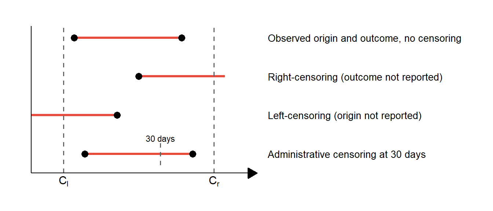
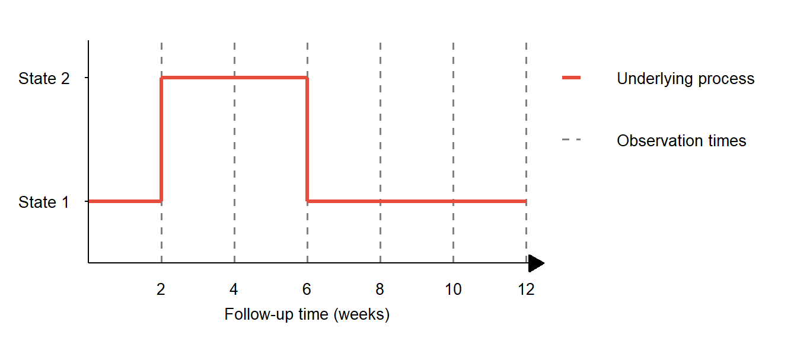
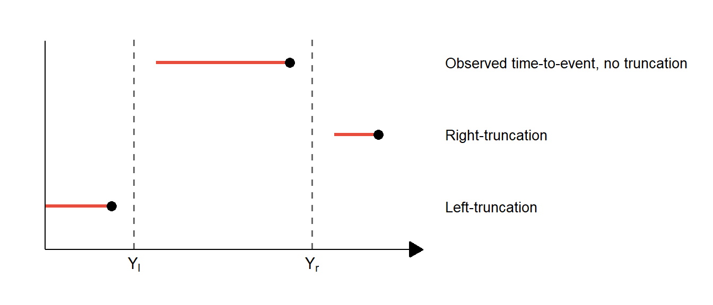

![]()

This is part two of a series on statistical methods for analysing time-to-event, or “survival” data.
What is survival analysis?
Survival analysis involves studying “time-to-event” data, also termed “survival data” - a powerful statistical framework that helps us answer questions about when events occur. It applies to any scenario where we’re interested in the time from a given origin to the occurrence of an event (the endpoint).
In infectious disease research, survival data are commonly used to describe clinical origins and endpoints, for example:
- Time from study recruitment to infection
- Duration from hospitalisation to discharge
- Period from infection until recovery or death
These data may be combined with information on patient characteristics (age, gender, socioeconomic status) and clinical variables (vaccination status, treatments). Survival analysis techniques help us to understand how these factors influence outcomes.
Incomplete information
One of the most distinctive aspects of survival analysis is how it handles incomplete information. In real-world studies, we often don’t observe the complete “story” for each participant. This incompleteness comes in several forms:
Censoring
Censoring occurs when information about an individual is only known within certain intervals or “censoring times”.
Right-censoring
The most common type of censoring occurs when our study ends before we observe the event of interest. For example, if we’re studying time to COVID-19 infection, and a participant remains uninfected when our study concludes, they’re “right-censored” - we know they remained infection-free for at least the duration of the study, but we don’t know what happens afterward.
More formally, we lack information to the “right” (or future) of the right-censoring time, \(C_r\). In this scenario we say an individual is right-censored at time \(C_r < X\), where \(X\) is the time that the event of interest takes place.
Left-censoring
If, on the other hand, the event of interest occurs at an unknown time, \(X\), before we started observing the participant at time \(C_l\) this is known as “left-censoring”. For instance, if we’re studying HIV infection, and a participant tests positive at their first visit, we know they acquired HIV at some point before joining the study, but we don’t know exactly when. In this scenario we say the individual is left-censored at time \(C_l > X\).
Administrative censoring
Sometimes we impose censoring on our dataset, limiting the time-to-event data for each individual to a pre-specified cut-off, with any events beyond this period not considered, e.g. mortality within 30 days of hospital admission. This is known as administrative censoring.
Interval censoring
Often, we only know that an event happened between two observation points, i.e. within a censoring interval \((L, R],\ L < X < R\). An example is the infection time for an individual which is typically not directly observed, but we can assume it occurs in-between a negative and positive test. Interval censoring is a feature of “intermittently-observed” data, where individuals are tested for the presence of infection at several time-points. Such interval-censored data can still be used to detect changes in an individual’s infection status when testing is sufficiently frequent, as shown in Figure 2.

Truncation
While censoring gives us partial information, truncation occurs when information about an individual is completely unobserved, and unavailable at the time of data collection or analysis. This is different from censoring because censored individuals are at least partially observed, while truncated individuals never enter our dataset. As with censoring, both left, right, and interval-truncation are possible.
- Left truncation: occurs when only event-times which take place after the left-truncation time, \(Y_l\), are available. For example, if individuals whose infection occurs prior to the study, \(X < Y_l\), are not included in our dataset.
- Right-truncation: occurs when only event-times which take place before the right-truncation time, \(Y_r\), are available. For example, when we have no knowledge of individuals who are at risk but whose event of interest takes place after the study endpoint, \(X > Y_r\).
- Interval-truncation: occurs when only event-times which take place within a specific truncation interval \([Y_l, Y_r]\) are available for observation. The key difference from left- and right-truncation is that in interval-truncation, both the left and right boundaries of the observation window play a role in determining which event-times are observed.

When standard statistics aren’t enough
Why can’t we just use regular statistical methods like t-tests or linear regression for time-to-event data? The key challenge is that censoring and truncation create a form of missing data that’s not random. If we removed all censored observations or treated censoring times as event times, we’d introduce severe bias.
Survival analysis methods are specifically designed for valid statistical estimation of incomplete data while avoiding these biases. We’ll start off by defining several fundamental functions for survival analysis:
The cumulative incidence function
Let \(T\) be the independent and identically distributed (i.i.d) random variable representing the survival time, \(T = t > 0\), for an individual, and assume this random variable has a probability distribution with probability density function \(f(t)\).
The distribution function of \(T\), also known as the cumulative incidence function, is the probability of “failure” before time \(t\), defined as:
\[F(t) = \Pr(T < t)=\int_0^t f(u) du\]
The survivor function
The survivor function \(S(t)\) gives the probability of surviving (not experiencing the event) beyond time \(t\). This is the cornerstone of survival analysis and is defined as:
\[S(t) = \Pr(T \geq t) = 1 - F(t)\]
where \(T\) is the random variable representing the time until the event occurs.
The survivor function starts at 1 (everyone is “alive” at time 0) and decreases toward 0 as time progresses. It has an intuitive interpretation: \(S(6 \text{ months}) = 0.8\) means 80% of individuals remain event-free after 6 months.
The hazard function
The hazard function \(h(t)\) represents the instantaneous rate of experiencing the event at time \(t\), given survival up to that point. Think of it as the “risk” at each moment, conditional on having survived so far:
\[h(t) = \lim_{\delta t \downarrow 0} \frac{\Pr(t \leq T < t+\delta t | T \geq t)}{\delta t}\]
By conditional probability, \(\Pr(A \mid B) = \Pr(AB)/\Pr(B)\), so the hazard function can also be expressed as:
\[\begin{aligned} h(t) &= \lim_{\delta t \downarrow 0} \left\{\frac{\Pr(t \leq T < t + \delta t)}{\delta t \Pr(T \geq t)}\right\} \\ &=\lim_{\delta t \downarrow 0} \left\{\frac{F(t + \delta t) - F(t)}{\delta t S(t)}\right\} \\ &=\lim_{\delta t \downarrow 0} \left\{\frac{F(t + \delta t) - F(t)}{\delta t}\right\}\frac{1}{S(t)} \end{aligned}\]
This limit is the definition of the derivative of \(F(t)\) with respect to \(t\), and therefore equal to \(f(t)\):
\[\lim_{\delta t \downarrow 0} \left\{\frac{F(t + \delta t) - F(t)}{\delta t}\right\} = \frac{d}{dt}F(t) = f(t)\]
Hence the hazard function is related to the survivor function through the relationship:
\[h(t) = \frac{f(t)}{S(t)}\]
NoteKey takeaways
- Survival analysis deals with “time-to-event” data, helping us understand when events happen, not just if they happen.
- This approach handles incomplete information through concepts like censoring (when we have partial information) and truncation (when some subjects are never observed).
- Standard statistical methods can’t properly handle censored data, which is why specialised survival analysis techniques are essential.
- The survivor function \(S(t)\) gives the probability of not experiencing the event beyond time \(t\).
- The hazard function \(h(t)\) represents the instantaneous risk of the event at time \(t\), given survival up to that point.
Coming next
In the next post, I’ll introduce the likelihood function and explore two classical methods for analysing survival data:
- The Kaplan-Meier estimator: a non-parametric approach to estimate survival probabilities;
- The Cox proportional hazards model: a semi-parametric regression technique for examining covariate effects.
References
- Collett D. Modelling Survival Data in Medical Research. Chapman & Hall/CRC Texts in Statistical Science 2023.
- Klein JP, Moeschberger ML. Survival Analysis: Techniques for Censored and Truncated Data.
Reuse
Citation
BibTeX citation:
@online{kirwan2025,
author = {Kirwan, Peter},
title = {Part {II:} {Survival} Analysis},
date = {2025-03-27},
url = {https://www.pkirwan.com/blog/survival-analysis/},
langid = {en}
}
For attribution, please cite this work as:
Kirwan, Peter. 2025. “Part II: Survival Analysis.” March
27, 2025. https://www.pkirwan.com/blog/survival-analysis/.